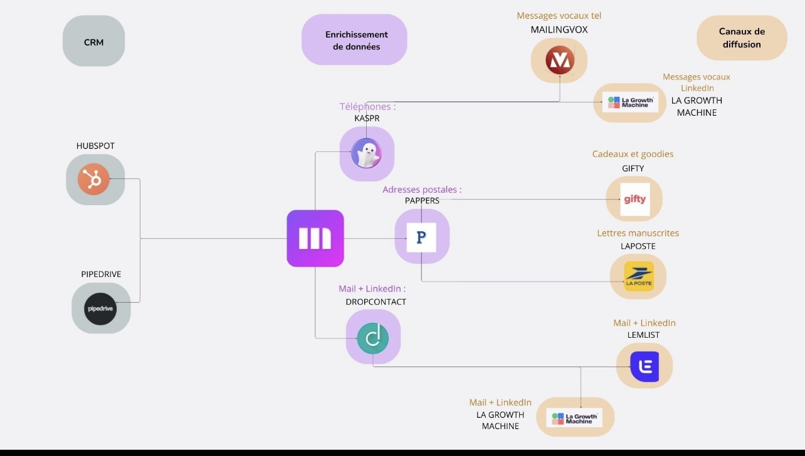

De la donnée CRM à une prospection multicanale.
Cartographie d'une architecture d'acquisition reliant CRM, automatisation, enrichissement des contacts et canaux de diffusion — avec une logique de qualification et de mesure orientée business.
Une acquisition B2B qui dépasse l'emailing.
Dans une démarche de prospection B2B, les informations disponibles dans un CRM sont rarement suffisantes pour personnaliser chaque prise de contact. L'architecture présentée dans le schéma source met en relation plusieurs catégories d'outils pour enrichir les fiches, préparer des actions et diffuser des messages sur différents canaux.
Centraliser
Faire du CRM le point d'ancrage des contacts, des entreprises et du suivi des opportunités.
Enrichir
Compléter les données utiles à la prise de contact : téléphone, adresse postale et coordonnées exploitables.
Orchestrer
Adapter les messages et les canaux selon la qualité des données et la stratégie de prospection.
Un système en trois couches.
Cette lecture simplifiée reprend les familles d'outils et les connexions visibles dans le schéma fourni. Elle décrit une architecture de référence ; elle ne constitue pas une preuve que chaque intégration ou campagne a été déployée en production.
01 · Sources CRM
Fiches prospects, historique des échanges, statuts commerciaux et suivi du pipeline.
02 · Orchestration & données
Complétion, routage et préparation des contacts pour les actions sortantes.
03 · Activation multicanale
Plusieurs formats de contact selon le contexte, le canal et la maturité du prospect.
Le schéma de travail original.
Document visuel utilisé comme point de départ pour reconstruire la logique d'acquisition et expliciter les interactions entre CRM, enrichissement et diffusion.

Comment transformer l'architecture en processus mesurable ?
Le parcours ci-dessous est une méthode proposée à partir du schéma, et non une chronologie d'actions dont l'exécution serait attestée.
Définir l'ICP
Décrire les entreprises cibles, les fonctions décisionnaires et les critères de qualification. Segmenter les listes dans le CRM.
Contrôler la donnée
Dédupliquer, vérifier les champs indispensables, tracer la provenance des coordonnées et les restrictions de contact.
Enrichir et router
Compléter uniquement les champs nécessaires puis orienter le contact vers un canal pertinent selon les informations disponibles.
Personnaliser
Adapter l'accroche au secteur, au rôle du destinataire et à la proposition de valeur ; éviter les séquences identiques pour tous.
Synchroniser le CRM
Faire remonter les réponses, rendez-vous, refus et changements de statut pour éviter les relances incohérentes.
Mesurer et itérer
Comparer les performances par segment et par canal, puis ajuster ciblage, messages et séquences.
Des KPI qui relient activité et résultat.
Le schéma ne contient pas de reporting chiffré. Les indicateurs suivants sont donc un cadre de mesure recommandé, sans valeurs de performance inventées.
| Niveau | Indicateur | Utilité |
|---|---|---|
| DATA | Taux de contacts enrichis et exploitables | Mesurer la qualité des listes avant activation. |
| ACQUISITION | Prospects contactés par segment et canal | Suivre le volume d'activité et la couverture de la cible. |
| ENGAGEMENT | Taux de réponse positive | Évaluer la pertinence des messages, au-delà des ouvertures. |
| CONVERSION | Rendez-vous qualifiés / prospects contactés | Relier l'outbound aux opportunités commerciales. |
| BUSINESS | Opportunités et pipeline générés | Observer la contribution de la prospection au développement commercial. |
| EFFICIENCE | Coût par rendez-vous qualifié | Comparer les canaux, notamment les actions physiques plus coûteuses. |
Ce que ce cas illustre.
Vision système
La prospection ne se réduit pas à envoyer des messages : elle suppose une donnée structurée, une orchestration cohérente et une traçabilité dans le CRM.
Approche business
Le bon indicateur n'est pas le nombre d'automatisations créées, mais la capacité du dispositif à produire des conversations commerciales pertinentes et des opportunités qualifiées.